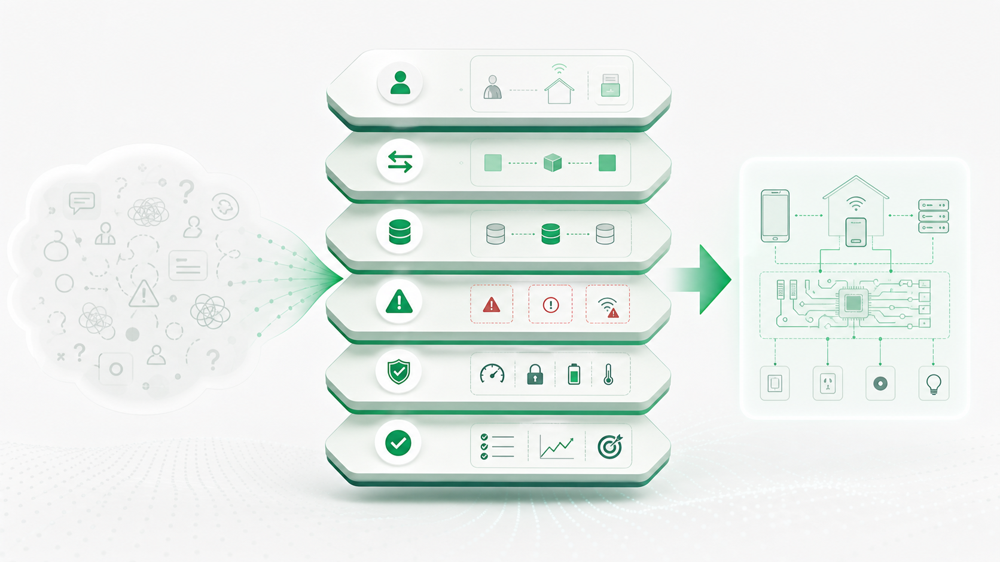
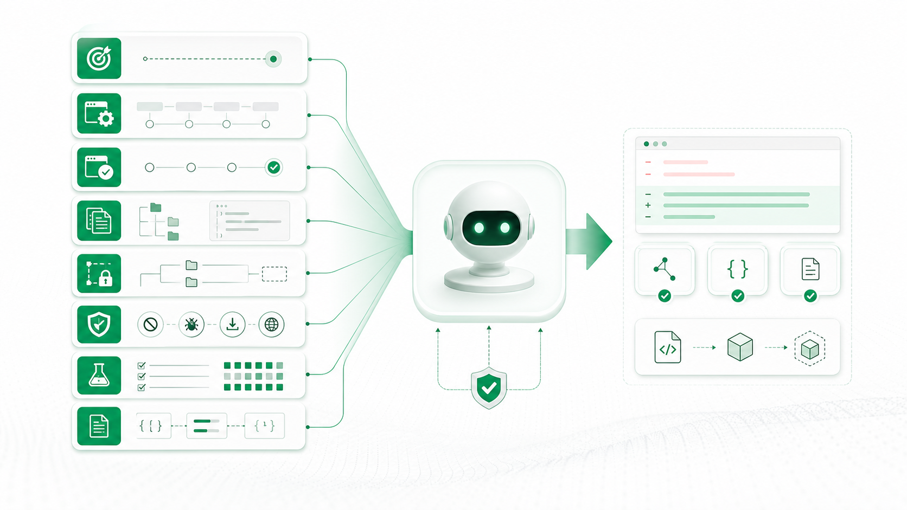
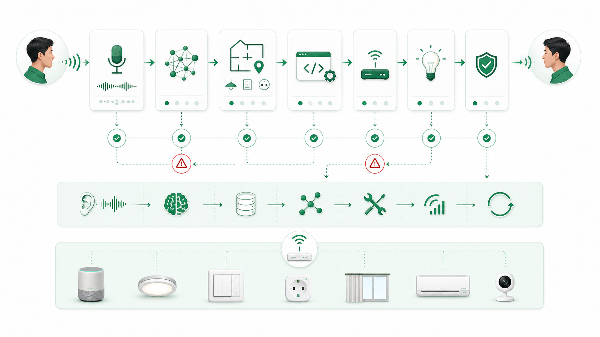
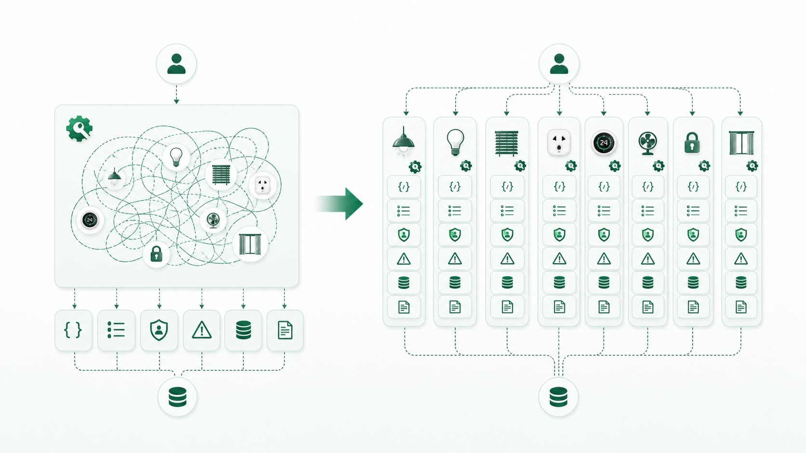
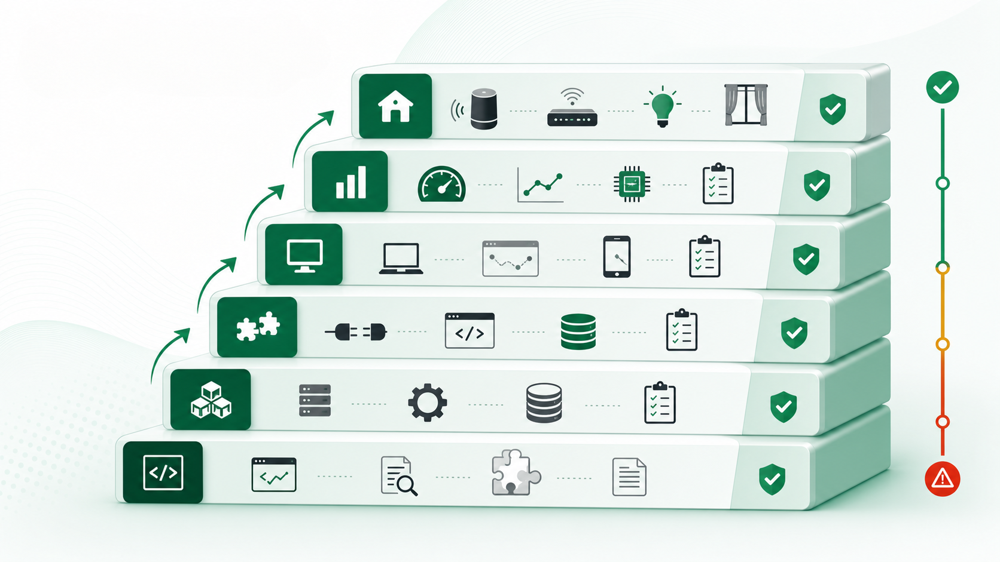

Lumi R&D Learning Platform
Từ coder sang người thiết kế hệ thống thực thi có kiểm chứng
Một nền tảng học tập giúp Software Engineer, Firmware Engineer, Tester, BA, PM và Leader dùng AI Agent như lực lượng thực thi mạnh nhưng có đường ray kỹ thuật rõ.
AI Native Agent Mindset Cho R&D
Nền tảng này giúp nhân sự R&D của Lumi/AND chuyển từ tư duy “làm task và viết code” sang tư duy thiết kế hệ thống thực thi có kiểm chứng trong thời AI Agent.
Lời hứa học tập
Sau khi học, người học có thể:
- - Biến yêu cầu mơ hồ thành đặc tả rõ, có ràng buộc và Definition of Done.
- - Chia hệ thống thành module, interface, state, error flow và ownership đủ rõ để con người lẫn AI cùng thực thi.
- - Thiết kế context, tool/API và phạm vi an toàn khi giao việc cho AI Agent.
- - Review code do AI sinh bằng tiêu chí kỹ thuật thay vì cảm giác.
- - Chứng minh kết quả đúng bằng test, log, trace, benchmark hoặc bằng chứng trên thiết bị thật.
- - Dùng mô hình 5Đ để nâng cấp quy trình làm việc của cả team R&D.
Đối tượng
Software Engineer, Firmware Engineer, Tester, BA, PM, Leader và các vai trò R&D đang xây sản phẩm công nghệ, smart home, IoT hoặc hệ thống có AI Agent tham gia vào quy trình phát triển.
Cấu trúc
| Tài liệu | Vai trò |
|---|---|
ban-do-ai-native-agent-mindset.md | Bản đồ lĩnh vực và các tầng năng lực. |
giao-trinh-ai-native-agent-mindset.md | Lộ trình học theo module và mục tiêu ứng dụng. |
thuat-ngu-ai-native-agent-mindset.md | Thuật ngữ cốt lõi để team dùng chung ngôn ngữ. |
Module-01 đến Module-08 | Bài học ứng dụng theo tình huống R&D. |
cong-cu-thuc-hanh-ai-agent.md | Checklist, template prompt, Definition of Done và review rubric. |
build_platform_html.py | Script dựng website tĩnh từ Markdown nguồn. |
index.html | Website học tập tĩnh đã build. |
Build local
python3 build_platform_html.pySau khi build, mở index.html trực tiếp trong trình duyệt hoặc chạy:
python3 -m http.server 8000Nguồn
Nội dung được xây từ bai_chia_se_ai_native_agent_mindset.md và mở rộng thành nền tảng học tập ứng dụng. Tài liệu nguồn gốc được giữ nguyên.
Bản đồ AI Native Agent Mindset Cho R&D
1. Lĩnh vực này thực sự là gì?
AI Native Agent Mindset là năng lực thiết kế cách con người, AI Agent, codebase, tool, test, log và quy trình cùng tạo ra kết quả kỹ thuật đúng. Trọng tâm không phải là “dùng AI cho nhanh”, mà là biến tốc độ của AI thành năng lực thực thi an toàn, có kiến trúc và có bằng chứng.
2. Các câu hỏi cốt lõi
| Câu hỏi | Vì sao quan trọng | Nếu không trả lời được sẽ nhầm gì? |
|---|---|---|
| Vấn đề thật là gì? | AI chỉ hữu ích khi mục tiêu đúng. | Sinh code giải nhầm pain point. |
| Ràng buộc nào không được phá? | R&D thường có legacy, firmware, tài nguyên, safety. | Tạo PR sạch nhưng làm hệ thống khó vận hành. |
| Hệ thống nên chia thế nào? | AI giỏi làm từng mảnh, nhưng cần mảnh đúng. | Nhân bản sự rối trong kiến trúc. |
| Kết quả đúng được chứng minh bằng gì? | Cảm giác “trông ổn” không đủ để release. | Release lỗi không có test, log hoặc rollback. |
| AI được phép làm gì và không được làm gì? | Agent có tốc độ cao nên cần đường ray. | Tự ý sửa ngoài scope hoặc thay đổi public contract. |
3. Nguyên tắc phân chia
| Tầng | Câu hỏi cốt lõi | Nhánh/mô hình tiêu biểu | Ý nghĩa thực tiễn |
|---|---|---|---|
| Purpose | Ta cần tạo giá trị gì? | Từ coder sang người thiết kế hệ thống thực thi. | Giữ vai trò con người ở định nghĩa, kiến trúc, kiểm chứng. |
| Specification | Task có đủ rõ để làm đúng chưa? | Goal, scope, constraint, Definition of Done. | Giảm mơ hồ trước khi AI sinh code. |
| Context | AI cần biết gì để không đoán mò? | Context Engineering, file liên quan, coding convention. | Tăng chất lượng output và giảm sửa lại. |
| Architecture | Hệ thống được chia và nối thế nào? | Boundary, interface, state, error flow, ownership. | Giúp AI làm nhanh nhưng không phá thiết kế. |
| Tool/API | AI sẽ hành động qua interface nào? | Tool rõ intent, enum, permission, confirmed state. | Giảm gọi nhầm, báo thành công giả, thao tác rủi ro. |
| Evaluation | Bằng chứng đúng là gì? | Test, log, trace, benchmark, HIL, fault injection. | Chuyển từ cảm giác sang kiểm chứng. |
| Operations | Team vận hành AI thế nào? | 5Đ, checklist review, approval, rollback. | Biến cá nhân dùng AI thành năng lực team. |
4. Bản đồ năng lực
| Nhánh | Bản chất | Dấu hiệu đạt | Ứng dụng |
|---|---|---|---|
| Đặc tả | Biến mơ hồ thành tiêu chí thực thi. | Task có mục tiêu, lỗi, ràng buộc, Done. | Brief cho AI, ticket, PR scope. |
| Kiến trúc | Chia hệ thống theo trách nhiệm và dòng dữ liệu. | Module, interface, state, log và ownership rõ. | Review thiết kế trước khi sinh code. |
| Kiểm chứng | Chứng minh hệ thống đúng trong điều kiện thật. | Có test, log, trace, metric, case lỗi. | Release, regression, firmware validation. |
| Phán đoán | Chọn phương án phù hợp bối cảnh. | Biết đánh đổi đơn giản, rủi ro, maintainability. | Quyết định giữa 5 phương án AI đề xuất. |
| Quản trị Agent | Dùng AI như lực lượng thực thi có kiểm soát. | Scope, context, approval, rollback, review. | Tăng tốc mà không mất kiểm soát chất lượng. |
5. Mô hình nhớ nhanh: 5Đ
| 5Đ | Câu hỏi kiểm tra |
|---|---|
| Đúng vấn đề | Có đang giải đúng pain point không? |
| Đúng thiết kế | Kiến trúc, module, interface có hợp lý không? |
| Đúng dữ liệu | Input, output, state, source of truth có rõ không? |
| Đúng điều kiện lỗi | Offline, timeout, mất gói, trùng tên, thiếu quyền đã xử lý chưa? |
| Đúng kiểm chứng | Có test, log, benchmark hoặc bằng chứng để chứng minh không? |
Giáo trình AI Native Agent Mindset Cho R&D
Cấu trúc tổng thể
| Phần | Module | Vai trò |
|---|---|---|
| Định hướng | 01 | Hiểu vì sao code rẻ hơn nhưng hệ thống đúng vẫn đắt. |
| Nền tảng thực thi | 02-03 | Viết đặc tả và context để AI làm đúng. |
| Thiết kế hệ thống | 04-05 | Chia kiến trúc và tool/API để AI hành động an toàn. |
| Kiểm chứng | 06-07 | Review, test, log, trace và phán đoán kỹ thuật. |
| Vận hành team | 08 | Biến mindset thành quy trình R&D lặp lại được. |
Lộ trình theo mục tiêu
| Mục tiêu người học | Nên học module nào | Kết quả mong đợi |
|---|---|---|
| Muốn giao việc cho AI tốt hơn | 01, 02, 03 | Viết task rõ, giới hạn scope, định nghĩa Done. |
| Muốn review code AI sinh | 02, 04, 06 | Đối chiếu yêu cầu, kiến trúc, test, log và rủi ro. |
| Muốn thiết kế API/tool cho AI | 04, 05, 07 | Tool ít nhập nhằng, có permission, response và confirmed state. |
| Muốn áp dụng cho firmware | 02, 04, 06 | Tính timing, memory, watchdog, fault và HIL trước khi tin code. |
| Muốn nâng cấp quy trình team | 06, 07, 08 | Có checklist, rubric, log, rollback và vòng học sau release. |
Chuẩn đầu ra
Người học hoàn thành nền tảng khi có thể tạo một task brief cho AI Agent gồm: mục tiêu, bối cảnh, phạm vi sửa, ràng buộc, Definition of Done, test bắt buộc, log/trace cần có, rủi ro còn lại và người review chịu trách nhiệm.
Thuật ngữ AI Native Agent Mindset
| Thuật ngữ | Nhóm | Định nghĩa ngắn | Bản chất | Câu hỏi ứng dụng |
|---|---|---|---|---|
| AI Agent | Nền tảng | Hệ thống AI có thể lập kế hoạch, đọc file, gọi tool, sửa code, chạy lệnh và lặp lại. | Một lực lượng thực thi nhanh cần được định hướng và kiểm chứng. | Agent được phép làm gì trong task này? |
| Specification | Đặc tả | Mô tả mục tiêu, ràng buộc, đầu vào, đầu ra, lỗi và tiêu chí hoàn thành. | Biến mơ hồ thành điều có thể thực thi. | Task này đã đủ rõ để AI không đoán mò chưa? |
| Definition of Done | Đặc tả | Danh sách điều kiện để coi task hoàn thành. | Hợp đồng chất lượng trước khi code. | Bằng chứng nào cho thấy Done thật sự đạt? |
| Context Engineering | Giao việc cho AI | Thiết kế ngữ cảnh AI cần để hành động đúng. | Prompt chỉ là phần nổi; context quyết định chất lượng. | AI cần biết file, convention, ràng buộc và điều cấm nào? |
| Architecture Boundary | Kiến trúc | Ranh giới trách nhiệm giữa module hoặc tầng hệ thống. | Giảm coupling và giúp AI sửa đúng chỗ. | Thay đổi này thuộc module nào và không được lan sang đâu? |
| Source of Truth | Dữ liệu | Nơi có thẩm quyền cuối cùng về trạng thái hoặc dữ liệu. | Tránh nhiều bản thật cạnh tranh nhau. | UI đang tin backend, cache hay thiết bị thật? |
| Confirmed State | Điều khiển thiết bị | Trạng thái đã được xác nhận bởi nguồn thật, không chỉ lệnh đã gửi. | Không báo thành công giả. | Khi nào được nói “đã bật”? |
| Evaluation | Kiểm chứng | Cách chứng minh kết quả đúng bằng test, log, benchmark hoặc bằng chứng thật. | Chuyển từ cảm giác sang bằng chứng. | Test/log nào sẽ bắt lỗi nếu AI làm sai? |
| Observability | Vận hành | Khả năng nhìn thấy hệ thống đang làm gì qua log, trace, metric. | Không đo được thì khó debug và cải tiến. | Lỗi nằm ở intent, tool, device hay response? |
| Hardware-in-the-loop | Firmware | Kiểm thử có thiết bị thật trong vòng kiểm chứng. | Mock không thay thế được hành vi vật lý. | Code này đã chạy trên thiết bị thật chưa? |
| Fault Injection | Kiểm chứng | Cố ý tạo lỗi như timeout, mất gói, offline, reboot để kiểm tra hệ thống. | Hệ thống tốt phải biết sai an toàn. | Ta đã thử tình huống xấu trước release chưa? |
| 5Đ | Quy trình | Đúng vấn đề, đúng thiết kế, đúng dữ liệu, đúng điều kiện lỗi, đúng kiểm chứng. | Bộ lọc chất lượng trước khi tin một task đã xong. | Task này thiếu chữ Đ nào? |
Module 01: AI Agent làm code rẻ hơn, nhưng hệ thống đúng vẫn đắt
Bài này giúp nhân sự R&D thấy đúng sự dịch chuyển giá trị: từ tự viết từng dòng code sang thiết kế hệ thống thực thi có kiểm chứng.
0. Vấn đề thật trong R&D
AI Agent có thể tạo controller, service, driver mẫu, unit test và tài liệu rất nhanh. Nhưng nếu yêu cầu mơ hồ, kiến trúc không rõ hoặc thiếu kiểm chứng, AI cũng làm nhanh phần sai.
| Khía cạnh | Mô tả |
|---|---|
| Quyền hạn | Người học có thể viết task, review PR, thiết kế API, yêu cầu test. |
| Áp lực | Cần tăng tốc nhưng không được giảm chất lượng sản phẩm. |
| Giới hạn | Legacy code, firmware thật, thiết bị thật, người dùng thật. |
| Hậu quả | Code nhiều hơn nhưng lỗi vào hệ thống nhanh hơn. |
Một câu cần nhớ: Code rẻ hơn, nhưng hệ thống đúng vẫn đắt vì đúng vấn đề, đúng kiến trúc và đúng kiểm chứng vẫn cần phán đoán con người.
1. Bóc tách bản chất
| Lớp phân tích | Câu hỏi kiểm tra | Nhận định |
|---|---|---|
| Triệu chứng | AI sinh nhiều code nhưng team vẫn mất thời gian sửa. | Tốc độ tạo output tăng nhanh hơn năng lực kiểm soát chất lượng. |
| Nguyên nhân gần | Task thiếu mục tiêu, constraint và test. | AI phải đoán. |
| Nguyên nhân gốc | Team coi AI như máy viết code, không phải lực lượng thực thi cần quản trị. | Thiếu hệ thống giao việc và kiểm chứng. |
| Hệ thống | Review bằng cảm giác, log thiếu, Done không rõ. | Lỗi lọt qua vì không có bằng chứng. |
2. Nguyên lý cốt lõi
| Nguyên lý | Giải thích | Dễ sai khi |
|---|---|---|
| AI khuếch đại hệ thống hiện có | Quy trình rõ thì AI tăng tốc; quy trình mơ hồ thì AI khuếch đại mơ hồ. | Dùng AI để bỏ qua phân tích. |
| Output không bằng outcome | PR sạch chưa chắc giải đúng vấn đề. | Đánh giá theo số dòng code hoặc tốc độ. |
| Con người giữ trách nhiệm cuối | AI có thể làm, nhưng không chịu trách nhiệm sản phẩm. | Merge vì “AI đã test rồi”. |
3. Mô hình tư duy
Mục tiêu sản phẩm → Đặc tả → Kiến trúc → AI thực thi → Kiểm chứng → Release → Học lại quy trình4. Quy trình hành động
| Bước | Việc cần làm | Đầu ra |
|---|---|---|
| 1 | Viết mục tiêu sản phẩm trước code. | Outcome rõ. |
| 2 | Nêu ràng buộc và điều không được phá. | Scope an toàn. |
| 3 | Chỉ định bằng chứng đúng. | Test/log/benchmark. |
| 4 | Review bằng 5Đ. | Quyết định merge có lý do. |
5. Case thực chiến
Team giao AI “tối ưu luồng điều khiển đèn”. AI sửa nhanh, test pass, nhưng sau release có thiết bị offline vẫn báo thành công. Vấn đề thật không phải thiếu code tối ưu; vấn đề là task không định nghĩa confirmed state, error path và log trace.
6. Thực hành có phản hồi
Viết lại một task gần đây theo cấu trúc: mục tiêu, bối cảnh, scope, ràng buộc, Definition of Done, test bắt buộc, rủi ro còn lại.
| Tiêu chí | Chưa đạt | Đạt | Xuất sắc |
|---|---|---|---|
| Mục tiêu | Chỉ nêu việc code. | Có outcome. | Có outcome và tiêu chí đo. |
| Scope | Mơ hồ. | Có phạm vi sửa. | Có cả điều không được đổi. |
| Kiểm chứng | Không rõ. | Có test. | Có test, log và rollback. |
7. Công cụ mang về
Dùng checklist 5Đ trong cong-cu-thuc-hanh-ai-agent.md trước khi giao AI làm task quan trọng.
Module 02: Specification - biến yêu cầu mơ hồ thành đặc tả có thể thực thi
Bài này giúp người học viết yêu cầu đủ rõ để AI, kỹ sư, tester và reviewer cùng hiểu một việc giống nhau.
0. Vấn đề thật
“Làm tính năng điều khiển thiết bị” nghe rõ nhưng chưa đủ để thực thi. Nó thiếu user outcome, input/output, source of truth, lỗi, permission, rollback và test.
Một câu cần nhớ: Đặc tả không phải giấy tờ; đặc tả là cách giảm đoán mò trước khi hệ thống sinh code.
1. Bóc tách bản chất
| Lớp | Câu hỏi | Ý nghĩa |
|---|---|---|
| Mục tiêu | Người dùng cần kết quả gì? | Tránh làm đúng task nhưng sai nhu cầu. |
| Đầu vào/đầu ra | Hệ thống nhận gì và trả gì? | Tránh interface mơ hồ. |
| Lỗi | Điều gì có thể sai? | Tránh happy path only. |
| Ràng buộc | Không được phá gì? | Bảo vệ kiến trúc và sản phẩm cũ. |
| Done | Bằng chứng hoàn thành là gì? | Giúp AI, reviewer, tester cùng chấm. |

2. Nguyên lý cốt lõi
| Nguyên lý | Giải thích | Giới hạn |
|---|---|---|
| Rõ trước khi nhanh | Task càng rõ, AI càng đáng tin. | Không cần viết dài nếu task nhỏ. |
| Error path là một phần yêu cầu | Offline, timeout, thiếu quyền là hành vi sản phẩm. | Không thể phủ mọi lỗi, phải chọn lỗi quan trọng. |
| Done phải đo được | “Chạy ổn” không phải tiêu chí. | Với thử nghiệm sớm, có thể dùng bằng chứng nhẹ hơn. |
3. Mô hình tư duy
Goal → Actor → Input → Output → Source of Truth → Error Cases → Constraints → Definition of Done4. Quy trình hành động
| Bước | Việc cần làm | Đầu ra | Lỗi thường gặp |
|---|---|---|---|
| 1 | Viết outcome người dùng. | Câu mục tiêu. | Viết “tạo API” thay vì kết quả sản phẩm. |
| 2 | Liệt kê luồng chính và lỗi chính. | Happy/error paths. | Bỏ qua timeout/offline. |
| 3 | Ghi constraint. | Điều không được phá. | Để AI tự refactor rộng. |
| 4 | Viết Done. | Tiêu chí merge. | Done không có test/log. |
5. Case thực chiến
Yêu cầu yếu: “Làm bật đèn phòng khách.”
Yêu cầu tốt hơn: “Cho phép người dùng bật/tắt đèn theo phòng. Nếu thiết bị offline thì không báo thành công. Nếu có nhiều đèn phù hợp thì hỏi lại hoặc dùng rule nhóm. UI chỉ báo thành công khi có confirmed state. Có test cho happy path, offline, timeout, nhiều thiết bị, thiếu quyền.”
6. Thực hành
Chọn một yêu cầu mơ hồ trong backlog và viết lại thành đặc tả 8 phần. Reviewer chỉ được chấp nhận khi có ít nhất 3 error case và 1 tiêu chí kiểm chứng rõ.
7. Công cụ mang về
Mẫu Definition of Done trong cong-cu-thuc-hanh-ai-agent.md.
Module 03: Context Engineering - giao việc cho AI như một lực lượng thực thi
Bài này giúp người học đưa đúng ngữ cảnh để AI Agent không đoán sai, sửa quá rộng hoặc bỏ qua ràng buộc quan trọng.
0. Vấn đề thật
Một yêu cầu “sửa bug này” thường thiếu file liên quan, kiến trúc hiện tại, convention, test cần chạy, phạm vi được sửa và điều cấm. AI vẫn có thể làm, nhưng phải đoán.
Một câu cần nhớ: Context Engineering là thiết kế môi trường ra quyết định cho AI.
1. Bóc tách bản chất
| Thành phần context | Vì sao cần | Ví dụ |
|---|---|---|
| Mục tiêu | Giữ AI bám outcome. | Không báo thành công khi device offline. |
| Kiến trúc hiện tại | Tránh phá boundary. | State update nằm ở module sync. |
| File liên quan | Giảm tìm lan man. | device-service, state-store, tests. |
| Convention | Giữ maintainability. | Không thêm dependency mới. |
| Test bắt buộc | Chứng minh đúng. | Offline, timeout, duplicated device. |
| Điều không được đổi | Giữ compatibility. | Không đổi public API. |

2. Nguyên lý cốt lõi
| Nguyên lý | Giải thích | Khi nào dễ sai |
|---|---|---|
| Context trước solution | Đừng yêu cầu giải pháp khi chưa cho đủ bối cảnh. | Copy prompt chung cho mọi repo. |
| Scope là guardrail | Phạm vi sửa càng rõ, rủi ro lan càng thấp. | Cho AI “dọn code” trong task bug nhỏ. |
| Output format giúp review | Yêu cầu AI tóm tắt nguyên nhân, file sửa, test, rủi ro. | Nhận diff mà không biết lý do. |
3. Mô hình tư duy
Task Brief = Goal + Current Behavior + Expected Behavior + Relevant Context + Allowed Scope + Constraints + Tests + Output Contract4. Quy trình hành động
| Bước | Việc cần làm | Đầu ra |
|---|---|---|
| 1 | Nêu bug/hành vi hiện tại và mong muốn. | AI hiểu vấn đề thật. |
| 2 | Chỉ định module/file cần xem trước. | Tìm đúng nơi. |
| 3 | Ghi phạm vi được sửa/không được sửa. | Giảm blast radius. |
| 4 | Yêu cầu test và summary. | Dễ review. |
5. Case thực chiến
Bug: thiết bị offline nhưng app vẫn báo “đã bật”. Nếu prompt chỉ nói “fix offline bug”, AI có thể sửa UI text. Prompt tốt phải nói nguồn thật của trạng thái là backend/device response, không đổi API, thêm test offline/timeout và log từ command tới confirmed state.
6. Thực hành
Viết prompt giao AI cho bug trên. Chấm theo rubric: có goal, context, scope, constraint, tests, output contract.
7. Công cụ mang về
Template giao việc cho AI Agent trong cong-cu-thuc-hanh-ai-agent.md.
Module 04: Architecture - chia hệ thống đúng để AI không nhân bản sự rối
Bài này giúp người học nhìn toàn chuỗi hệ thống thay vì chỉ nhìn một function hoặc một PR.
0. Vấn đề thật
AI có thể viết một hàm tốt, nhưng sản phẩm không được tạo ra từ một hàm tốt. Nếu module, interface, state, error flow và ownership mơ hồ, AI sẽ sửa nhanh trong một cấu trúc sai.
Một câu cần nhớ: AI giỏi làm từng mảnh; con người phải chia đúng mảnh.
1. Bóc tách bản chất
| Thành phần kiến trúc | Câu hỏi | Rủi ro nếu mơ hồ |
|---|---|---|
| Module | Trách nhiệm nằm ở đâu? | Logic lặp và coupling. |
| Interface | Tầng này hứa trả gì? | Contract vỡ khi sửa. |
| State | Trạng thái thật ở đâu? | UI tin trạng thái giả. |
| Error flow | Lỗi đi qua đâu? | Báo thành công sai. |
| Ownership | Ai review phần này? | Không ai chịu trách nhiệm cuối. |

2. Nguyên lý cốt lõi
| Nguyên lý | Giải thích | Dễ sai khi |
|---|---|---|
| Boundary bảo vệ tốc độ | Ranh giới rõ giúp AI sửa nhanh mà ít lan. | Cho AI sửa xuyên nhiều tầng. |
| State phải có nguồn thật | Lệnh đã gửi không đồng nghĩa thiết bị đã đổi trạng thái. | UI dùng optimistic state như confirmed state. |
| Error flow là kiến trúc | Lỗi không phải phần phụ. | Chỉ thiết kế happy path. |
3. Mô hình tư duy
Audio → Speech Recognition → Intent → Device/Room Mapping → Tool Call → Device Response → Confirmed State → User Response4. Quy trình hành động
| Bước | Việc cần làm | Đầu ra |
|---|---|---|
| 1 | Vẽ dòng dữ liệu chính. | Biết input/output từng tầng. |
| 2 | Vẽ dòng lỗi. | Biết lỗi bị bắt ở đâu. |
| 3 | Gắn ownership. | Biết ai review. |
| 4 | Chỉ định test theo boundary. | Không test quá hẹp. |
5. Case thực chiến
“Bật đèn phòng khách” có thể thất bại ở nhận diện giọng nói, hiểu intent, map sai phòng, chọn sai thiết bị, thiết bị offline, gateway timeout hoặc thiếu confirmed state. Nếu chỉ sửa function gọi API, team có thể bỏ sót lỗi ở mapping hoặc response.
6. Thực hành
Vẽ flow cho một tính năng đang làm. Đánh dấu: source of truth, error point, retry, log, owner, test. Nếu không đánh dấu được, chưa nên giao AI sửa code rộng.
7. Công cụ mang về
Bảng Architecture Boundary Review: module, responsibility, input, output, state, error, owner, test.
Module 05: Tool/API Design - thiết kế “tay chân” an toàn cho AI Agent
Bài này giúp người học thiết kế API/tool rõ intent, ít nhập nhằng và có guardrail cho hành động rủi ro.
0. Vấn đề thật
Tool mơ hồ như control_device(name, value) dễ khiến AI chọn sai thiết bị, sai hành động hoặc báo thành công khi chưa có xác nhận. Tool rõ giúp AI hành động đúng hơn và reviewer dễ kiểm chứng hơn.
Một câu cần nhớ: Tool càng mơ hồ, AI càng dễ dùng sai; tool càng rõ, hệ thống càng dễ kiểm chứng.
1. Bóc tách bản chất
| Thiết kế | Vấn đề | Phiên bản rõ hơn |
|---|---|---|
control_device(name, value) | name nhập nhằng, value không có kiểu. | set_device_power(device_id, power_state) |
set_light(value) | Không biết brightness hay power. | set_light_brightness(device_id, brightness_percent) |
send_command(payload) | Không có contract rõ. | Tool theo intent với enum và response schema. |

2. Nguyên lý cốt lõi
| Nguyên lý | Giải thích | Dễ sai khi |
|---|---|---|
| Một tool nên có một intent chính | Giảm hành vi bất ngờ. | Gom nhiều hành động vào một endpoint tiện lợi. |
| Kiểu dữ liệu là guardrail | Enum và schema giúp AI ít gọi sai. | Dùng string tự do. |
| Response phải phân biệt sent và confirmed | Gửi lệnh thành công chưa chắc thiết bị đổi trạng thái. | Trả success=true quá sớm. |
| Hành động rủi ro cần permission | Một số tool cần approval hoặc scope. | Cho AI thao tác production tự do. |
3. Mô hình tư duy
Tool tốt = Tên rõ + Input rõ + Enum rõ + Permission rõ + Error rõ + Response rõ + Log rõ4. Quy trình hành động
| Bước | Việc cần làm | Đầu ra |
|---|---|---|
| 1 | Tách tool theo intent. | API ít nhập nhằng. |
| 2 | Chuyển string tự do thành enum/schema. | Guardrail dữ liệu. |
| 3 | Thiết kế error và confirmed state. | Không báo thành công giả. |
| 4 | Gắn permission và audit log. | An toàn vận hành. |
5. Case thực chiến
AI nhận “mở rèm phòng ngủ” nhưng tool chỉ có control_device(name, value). Nếu có nhiều rèm hoặc một scene cùng tên, AI có thể chọn sai. Tool tốt cần device id, loại hành động, trạng thái mong muốn, permission và phản hồi xác nhận.
6. Thực hành
Chọn một API hoặc tool hiện có. Viết lại theo 7 tiêu chí: tên rõ, input rõ, enum, permission, error, response, log.
7. Công cụ mang về
Checklist Tool/API Design: intent, schema, enum, id thay vì tên, permission, idempotency, confirmed state, audit log.
Module 06: Evaluation - bằng chứng nào cho thấy kết quả đúng?
Bài này giúp người học chuyển từ “nhìn ổn” sang kiểm chứng bằng test, log, benchmark và bằng chứng thiết bị thật.
0. Vấn đề thật
AI có thể tạo PR sạch, đặt tên tốt và viết test có vẻ hợp lý. Nhưng PR vẫn có thể sai yêu cầu, phá kiến trúc, bỏ sót edge case hoặc yếu trên thiết bị thật.
Một câu cần nhớ: Không có kiểm chứng, AI chỉ tạo ra cảm giác tiến bộ.
1. Bóc tách bản chất
| Loại bằng chứng | Dùng khi | Ví dụ |
|---|---|---|
| Unit test | Logic cục bộ. | Validate input, state transition. |
| Integration test | Nhiều module phối hợp. | API tới state store. |
| Contract test | Interface cần giữ ổn định. | Response schema không đổi. |
| E2E test | Luồng người dùng. | Bật đèn theo phòng. |
| Load/security test | Rủi ro hiệu năng/bảo mật. | Latency, permission bypass. |
| HIL/fault injection | Firmware/thiết bị thật. | Timeout, brown-out, packet loss. |

2. Nguyên lý cốt lõi
| Nguyên lý | Giải thích | Dễ sai khi |
|---|---|---|
| Test phải gắn với rủi ro | Không phải mọi test đều có giá trị như nhau. | Test happy path để che lỗi error path. |
| Log là bằng chứng vận hành | Khi lỗi thật xảy ra, log giúp truy vết. | Chỉ log “failed”. |
| Firmware cần thực tế vật lý | Mock không đo timing, power, watchdog, nhiễu. | Tin driver mẫu vì compile được. |
3. Mô hình tư duy
Risk → Evidence Type → Test/Log/Metric → Pass Criteria → Residual Risk4. Quy trình hành động
| Bước | Việc cần làm | Đầu ra |
|---|---|---|
| 1 | Nêu rủi ro chính của thay đổi. | Danh sách rủi ro. |
| 2 | Chọn loại bằng chứng tương ứng. | Test/log/metric. |
| 3 | Đặt ngưỡng pass. | Tiêu chí khách quan. |
| 4 | Ghi rủi ro còn lại. | Quyết định release có trách nhiệm. |
5. Case thực chiến
AI sinh state machine firmware cho relay. Compile pass chưa đủ. Cần test timing, memory, watchdog recovery, mất gói truyền thông, reboot giữa lệnh, long-run và xác nhận trên thiết bị thật.
6. Thực hành
Với một PR hiện tại, lập bảng Risk → Evidence. Nếu có rủi ro cao mà không có bằng chứng, PR chưa sẵn sàng merge.
7. Công cụ mang về
Rubric review code do AI sinh trong cong-cu-thuc-hanh-ai-agent.md.
Module 07: Observability và phán đoán kỹ thuật
Bài này giúp người học nhìn thấy hệ thống khi chạy thật và chọn phương án kỹ thuật phù hợp thay vì chọn phương án trông hay nhất.
0. Vấn đề thật
Khi hệ thống AI-native sai, lỗi có thể nằm ở user input, speech recognition, intent, context, tool call, device response, state sync hoặc final response. Nếu thiếu observability, team chỉ đoán.
Một câu cần nhớ: Hệ thống không quan sát được thì không thể trưởng thành có trách nhiệm.
1. Bóc tách bản chất
| Cần nhìn thấy | Câu hỏi | Ý nghĩa |
|---|---|---|
| User input | Người dùng thật sự nói/nhập gì? | Tránh đổ lỗi sai tầng. |
| Intent | AI hiểu mục tiêu gì? | Bắt lỗi hiểu sai. |
| Context | AI nhận bối cảnh nào? | Bắt lỗi context thiếu. |
| Tool call | Tool nào được gọi với tham số gì? | Bắt lỗi action. |
| Tool response | Tool trả gì? | Phân biệt sent/confirmed. |
| Final response | Người dùng được báo gì? | Bắt lỗi nói quá chắc chắn. |
2. Nguyên lý cốt lõi
| Nguyên lý | Giải thích | Dễ sai khi |
|---|---|---|
| Log phải phục vụ câu hỏi debug | Log nhiều chưa chắc hữu ích. | Log không có correlation id. |
| Phán đoán là chọn dưới ràng buộc | AI đưa phương án, con người chọn theo bối cảnh. | Chọn giải pháp phức tạp vì nghe hiện đại. |
| Đơn giản là tài sản vận hành | Càng ít phần chuyển động, càng dễ kiểm chứng. | Tối ưu sớm hoặc over-engineer. |
3. Mô hình tư duy
Observe → Localize → Explain → Decide → Verify → Learn4. Quy trình hành động
| Bước | Việc cần làm | Đầu ra |
|---|---|---|
| 1 | Gắn correlation id cho luồng quan trọng. | Trace xuyên tầng. |
| 2 | Log input, intent, tool, response, final state. | Dữ liệu debug. |
| 3 | So sánh phương án theo rủi ro. | Quyết định kỹ thuật. |
| 4 | Đo sau release. | Học từ vận hành thật. |
5. Case thực chiến
AI đề xuất thêm một service trung gian để xử lý trạng thái thiết bị. Phương án nghe sạch, nhưng team hiện tại thiếu owner vận hành service mới. Phán đoán tốt có thể chọn sửa contract và log hiện tại trước, chỉ tách service khi có rủi ro đủ lớn.
6. Thực hành
Lấy 3 phương án AI đề xuất cho một bài toán. Chấm mỗi phương án theo: đơn giản, rủi ro, compatibility, testability, observability, năng lực team.
7. Công cụ mang về
Decision table: phương án, lợi ích, rủi ro, điều kiện thành công, test cần có, log cần có, rollback.
Module 08: Operating System cho team R&D AI-native
Bài này giúp leader và team biến AI-native mindset thành thói quen vận hành hằng ngày, không chỉ là kỹ năng cá nhân.
0. Vấn đề thật
Nếu mỗi người dùng AI theo cách riêng, chất lượng sẽ phụ thuộc vào cá nhân. Team cần một operating system chung: task brief, context, review, test, log, approval, rollback và learning loop.
Một câu cần nhớ: Giá trị cao nhất là biến AI thành năng lực tổ chức, không chỉ năng suất cá nhân.
1. Bóc tách bản chất
| Tầng vận hành | Câu hỏi | Dấu hiệu đạt |
|---|---|---|
| Trước khi làm | Task có mục tiêu, scope, Done chưa? | Không giao việc mơ hồ. |
| Khi dùng AI | Context và quyền sửa rõ chưa? | AI tạo diff đúng phạm vi. |
| Khi review | Có đối chiếu 5Đ không? | Không merge bằng cảm giác. |
| Trước release | Có rollback và monitor không? | Release có kiểm soát. |
| Sau release | Có ghi lại bài học không? | Team làm lần sau tốt hơn. |
2. Nguyên lý cốt lõi
| Nguyên lý | Giải thích | Dễ sai khi |
|---|---|---|
| Quy trình tốt làm AI mạnh hơn | AI cần đường ray để chạy nhanh. | Thả AI tự do vào production code. |
| Checklist là bộ nhớ tổ chức | Giảm phụ thuộc vào người nhớ giỏi. | Checklist quá dài và không dùng thật. |
| Học sau release là bắt buộc | Mỗi lỗi nên nâng cấp quy trình. | Chỉ sửa lỗi rồi quên pattern. |
3. Mô hình tư duy
Task Brief → AI Execution → Human Review → Evidence → Release → Monitor → Retrospective → Better Template4. Quy trình hành động
| Tuần | Trọng tâm | Kết quả |
|---|---|---|
| 1 | Viết task rõ. | Mỗi task có goal, scope, constraint, Done. |
| 2 | Dùng AI có kiểm soát. | Prompt có context, phạm vi, test. |
| 3 | Thiết kế test và log. | Mỗi task có bằng chứng đúng. |
| 4 | Cải tiến quy trình team. | Checklist review, template task, bug pattern. |
5. Case thực chiến
Sau một lỗi offline báo thành công, team không chỉ sửa bug. Team cập nhật template task để luôn hỏi confirmed state, thêm test timeout/offline vào checklist, bổ sung log correlation id và thêm mục “source of truth” vào review.
6. Thực hành
Chọn một lỗi production hoặc bug pattern gần đây. Viết “bài học quy trình”: lỗi lọt qua vì thiếu chữ Đ nào, template nào cần sửa, test/log nào cần thêm, ai chịu trách nhiệm áp dụng.
7. Công cụ mang về
Một operating system tối thiểu cho team: task template, 5Đ review, AI scope policy, required evidence, release checklist, retrospective learning log.
Công cụ thực hành AI Agent Cho R&D
1. Template giao việc cho AI Agent
Bạn là AI coding agent hỗ trợ trong project này.
## Mục tiêu
[Mô tả kết quả sản phẩm cần đạt, không chỉ mô tả code cần viết.]
## Bối cảnh
[Module, flow, lỗi hiện tại, hành vi mong muốn, dữ liệu nguồn sự thật.]
## Phạm vi được phép sửa
- Được sửa:
- Không được sửa:
## Ràng buộc kỹ thuật
- Không thay đổi public API nếu chưa được yêu cầu.
- Không thêm thư viện mới nếu chưa được duyệt.
- Không làm tăng độ phức tạp không cần thiết.
- Tuân thủ convention hiện tại.
## Definition of Done
Task chỉ hoàn thành khi:
1.
2.
3.
## Test bắt buộc
- Happy path:
- Error path:
- Edge case:
- Regression case:
## Yêu cầu đầu ra
1. Tóm tắt nguyên nhân.
2. Tóm tắt thay đổi.
3. Danh sách file đã sửa.
4. Test đã thêm/chạy.
5. Rủi ro còn lại nếu có.2. Checklist 5Đ trước khi merge
| 5Đ | Câu hỏi | Bằng chứng cần có |
|---|---|---|
| Đúng vấn đề | Có giải đúng pain point không? | Ticket/brief có mục tiêu và user outcome. |
| Đúng thiết kế | Có giữ boundary, interface, ownership không? | Review kiến trúc hoặc diff nhỏ đúng scope. |
| Đúng dữ liệu | Source of truth, state, input/output rõ chưa? | Contract, schema, confirmed state hoặc trace. |
| Đúng điều kiện lỗi | Offline, timeout, thiếu quyền, trùng tên đã tính chưa? | Test lỗi, fault injection, rollback. |
| Đúng kiểm chứng | Có chứng minh được đúng không? | Test pass, log, benchmark, thiết bị thật nếu cần. |
3. Rubric review code do AI sinh
| Tiêu chí | Chưa đạt | Đạt | Xuất sắc |
|---|---|---|---|
| Bám yêu cầu | PR giải vấn đề khác hoặc quá rộng. | Đúng mục tiêu chính. | Đúng mục tiêu, giữ scope, nêu rõ tradeoff. |
| Kiến trúc | Thêm coupling hoặc bypass boundary. | Theo pattern hiện tại. | Làm rõ ownership và giảm rủi ro vận hành. |
| Lỗi và edge case | Chỉ xử lý happy path. | Có error path chính. | Có timeout, permission, rollback, trạng thái không chắc chắn. |
| Test | Ít hoặc không có test. | Có test chính. | Có regression, edge, contract hoặc HIL khi cần. |
| Observability | Không log/trace được lỗi. | Có log cơ bản. | Trace đủ từ input đến tool/device/response. |
| Maintainability | Code dài, khó hiểu, khó sửa. | Dễ đọc và theo convention. | Đơn giản, ít phụ thuộc, dễ mở rộng có kiểm soát. |
4. Mẫu Definition of Done cho smart home
Task được coi là hoàn thành khi:
1. User có thể bật/tắt thiết bị theo phòng.
2. Nếu thiết bị offline, hệ thống không báo thành công giả.
3. Nếu có nhiều thiết bị phù hợp, hệ thống hỏi lại hoặc dùng rule nhóm đã định nghĩa.
4. UI chỉ báo thành công khi có confirmed state từ backend hoặc thiết bị.
5. Có test cho happy path, offline, timeout, nhiều thiết bị, thiếu quyền.
6. Có log trace từ user command tới intent, tool call, device response và final response.
7. Không thay đổi public API hiện tại nếu chưa được duyệt.
8. Có rollback plan nếu release gây lỗi.5. Bài tập chuyển giao
Chọn một task thật trong sprint hiện tại. Viết lại task đó bằng template trên, rồi tự chấm theo 5Đ. Nếu thiếu từ hai chữ Đ trở lên, chưa giao cho AI Agent thực thi.